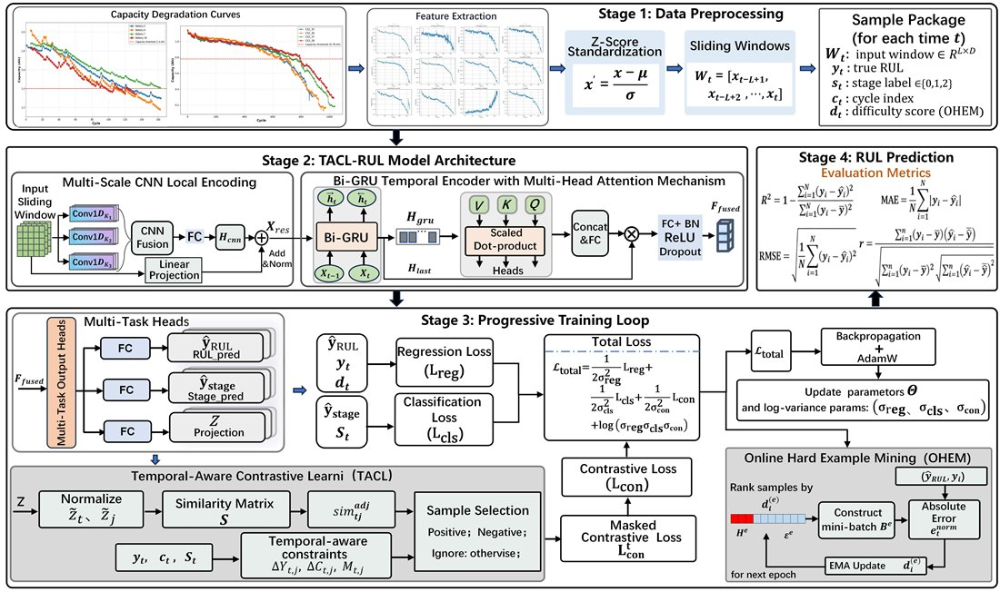
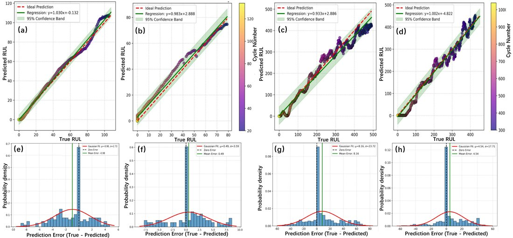
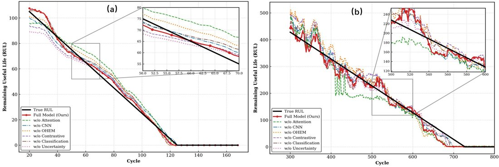

张瑞芹：多尺度时序学习的锂电池剩余寿命预测发表于 Mathematical Foundations of Computing
张瑞芹同学参与完成的研究成果 Multi-scale temporal learning for robust battery remaining useful life prediction 发表于 Mathematical Foundations of Computing（2026, 15: 100348，导师张承玺为第一作者与通讯作者）。论文提出 BiGRU-TACL 多任务学习框架：用循环数与 RUL 差值构造对比样本对，让特征在时间上保持有序；配合在线难例挖掘与基于同方差不确定性的自适应权重，在 NASA 与 CALCE 数据集上取得 R² 不低于 0.96、健康阶段分类准确率高于 93% 的结果。

问题：时序结构、临界区稳定与多任务权重
现有锂电池剩余寿命预测方法有三处不足。其一，混合模型虽然能捕捉退化序列的时间依赖，却没有标签引导的时间结构约束，相邻循环的特征未必比远端循环更接近，而这正是电池退化的基本物理性质。其二，损失函数对所有样本一视同仁，容量再生这类稀疏难例容易被平滑数据淹没，临近失效的临界区误差偏大。其三，联合预测 RUL 与健康阶段时，目标函数常取固定加权和，回归与分类的梯度容易冲突。
方法：时序感知对比学习加自适应多任务权重
- 多尺度特征主干：多尺度 CNN 提取局部退化模式，BiGRU 与多头自注意力建模长程时序与关键循环。
- 时序感知对比学习（TACL）：以循环数差与 RUL 差构造正负样本对，并调节时序相似度，把「时间相邻、退化状态相近」的约束写进对比目标，替代常见的随机时间裁剪增强。
- 在线难例挖掘（OHEM）：结合区域加权回归损失与边界惩罚，训练中动态聚焦高误差样本与临界退化区间，而不是平均对待所有样本。
- 同方差不确定性加权：按各任务的不确定性自动学习回归、分类与对比学习的损失权重，避免人工调权导致的梯度支配或权重振荡。
结果：四块电池 R² 均高于 0.96
- 逐电池测试：B0005 的 R² 为 0.9931（MAE 2.03），B0018 为 0.9600（MAE 3.35），CS2 37 为 0.9833，CS2 38 为 0.9766；四块电池的阶段分类准确率均超过 93%。
- NASA 数据集：MAE 2.6920、RMSE 4.0302，比最佳基线 CNN-LSTM 分别降低 49.6% 与 44.5%，R² 达 0.9766。
- CALCE 数据集：MAE 13.8256、RMSE 21.6848，比次优的 TCN 分别降低 21.7% 与 19.0%，R² 达 0.9799。
- 消融实验：去掉多尺度 CNN，MAE 在 NASA 与 CALCE 上分别上升 43.9% 与 18.6%；去掉注意力模块上升 52.3% 与 65.3%；去掉 TACL 上升 26.2% 与 18.1%；去掉 OHEM 上升 45.9% 与 36.2%；去掉不确定性加权上升 36.5% 与 12.7%。

